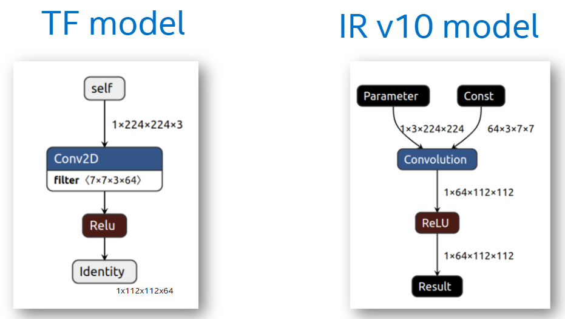

OpenVINO™ API 2.0 迁移指南¶
本指南介绍了全新的 OpenVINO™ API (API 2.0) 以及新型 OpenVINO™ IR 模型格式：IR v11。您将在下文中找到其新旧版本的比较。
API 2.0 简介¶
从 TensorFlow、ONNX 运行时、PyTorch、PaddlePaddle 等其他框架迁移应用时，2022.1 之前的 OpenVINO™ 版本需要更改应用逻辑。之所以需要做出更改，是因为：
模型优化器更改了某些输入的输入精度。例如，具有
I64输入的神经语言处理模型已更改为包含I32输入。模型优化器更改了 TensorFlow 模型的布局（请参阅 OpenVINO™ 中的布局）。因此在使用布局不同于框架布局的输入数据时有特殊要求： 
由于设备插件的限制，推理引擎 API (
InferenceEngine::CNNNetwork) 应用了一些输入和输出精度的转换规则。在模型优化器中进行模型转换期间，用户需要指定输入形状，并在应用中使用静态形状。
像在原始框架中一样，OpenVINO™ 2022.1 引入了 API 2.0（也称为 OpenVINO™ API v2）来调整使用模型的逻辑 - 未更改布局和精度，使用张量名称和索引来执行操作以对输入和输出进行寻址。OpenVINO™ 运行时将用于推理的推理引擎 API 与用于处理模型和操作的 nGraph API 结合在一起。API 2.0 有通用的结构、命名约定样式、命名空间，并移除了重复的结构。有关更多详细信息，请参阅 OpenVINO™ API v2 对推理管道的更改。
注意：您现有的应用将继续正常使用 OpenVINO™ 运行时 2022.1。尽管如此，仍强烈建议迁移到 API 2.0。这便于您使用其他功能，如预处理和动态形状支持。
全新 OpenVINO™ IR v11¶
为了支持这些功能，OpenVINO™ 引入了 OpenVINO™ IR v11，它现在是默认版本的模型优化器。以 OpenVINO™ IR v11 表示的模型的输入和输出与原始框架格式下的原始模型完全匹配。此外，无需在转换过程中指定输入形状。因此生成的 OpenVINO™ IR v11 包含 -1，用于表示未定义维度。有关如何充分利用此功能的更多详细信息，请参阅使用动态形状。有关如何在应用中将形状调整为静态形状的信息，请参阅更改输入形状。
OpenVINO™ IR v11 完全兼容借助旧版 OpenVINO™ 使用的推理引擎 API 编写的应用。这种向后兼容性归功于 OpenVINO™ IR v11 中包含的其他运行时信息。这意味着，如果基于推理引擎的应用读取 OpenVINO™ IR v11，会在内部将其转换为 OpenVINO™ IR v10。
所有 OpenVINO™ 开发工具均支持 OpenVINO™ IR v11，包括训练后优化工具、基准测试应用等。
向后兼容 OpenVINO™ IR v10¶
API 2.0 还支持向后兼容 OpenVINO™ IR v10 模型。如果您拥有 OpenVINO™ IR v10 文件，也可以将其馈送到 OpenVINO™ 运行时。有关更多详细信息，请参阅迁移步骤。
某些 OpenVINO™ 开发工具也支持将 OpenVINO™ IR v10 和 v11 作为输入：
默认情况下，精度检查器使用 API 2.0 来测量模型精度。它还支持通过使用
--use_new_api False命令行参数切换到旧版 API。这两个启动程序都与 OpenVINO™ IR v10 和 v11 兼容，但在某些情况下应更新配置文件。有关更多详细信息，请参阅精度检查器文档。默认情况下，编译工具编译要在 API 2.0 中使用的模型。要在推理引擎 API 下使用生成的已编译 Blob，应传递附加
ov_api_1_0选项。
但是，OpenVINO™ 2022.1 的训练后优化工具和深度学习工作台不支持 OpenVINO™ IR v10。它们需要最新版本的模型优化器才能生成 OpenVINO™ IR v11 文件。
注意：要量化 OpenVINO™ IR v10 模型以在 OpenVINO™ 2022.1 中运行，请下载并使用 OpenVINO™ 2021.4 的训练后优化工具。
API 2.0 与推理引擎 API 的行为差异¶
推理引擎和 nGraph API 不会因引入了新 API 而被弃用，用户仍可以在应用中使用这些 API。但是，仍强烈建议迁移到 API 2.0，因为它提供了更多功能（在未来版本中会进一步扩展），例如：
使用动态形状，这会在使用神经语言处理 (NLP) 和超分辨率模型等兼容模型时提高性能。
预处理模型，这会在推理模型中添加预处理操作并完全占用加速器，从而释放 CPU 资源。
要了解推理引擎 API 与 API 2.0 之间的差异，请先查阅这两类行为的定义：
OpenVINO™ 的旧行为假定：
模型优化器可以更改原始框架中模型的输入元素类型和维度顺序（布局）。
推理引擎可以覆盖输入和输出元素类型。
推理引擎 API 使用操作名称对输入和输出进行寻址（例如，InferenceEngine::InferRequest::GetBlob）。
推理引擎 API 不支持具有动态输入形状的模型的编译。
在 2022.1 中实现的新行为假定模型与框架完全一致：
模型优化器保留输入元素类型和维度顺序（布局），并存储原始模型中的张量名称。
OpenVINO™ 运行时 2022.1 会读取任何格式（OpenVINO™ IR v10、OpenVINO™ IR v11、ONNX、PaddlePaddle 等）的模型。
API 2.0 使用张量名称进行寻址，这是兼容的模型框架采用的标准方法。
API 2.0 还可以通过索引对输入和输出张量进行寻址。一些模型格式（如 ONNX）对 OpenVINO 2022.1 保留的输入和输出顺序很敏感。
下表说明了基于这两个 API 的模型会使用哪种行为：旧行为还是新行为。
API |
OpenVINO™ IR v10 |
OpenVINO™ IR v11 |
ONNX 文件 |
使用代码创建的模型 |
|---|---|---|---|---|
推理引擎/nGraph API |
旧 |
旧 |
旧 |
旧 |
API 2.0 |
旧 |
新 |
新 |
新 |
更多信息¶
请参阅下文了解如何将基于推理引擎的应用迁移到 API 2.0：